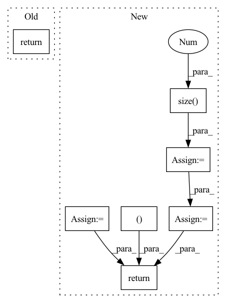

Pattern ID :967

Before Change
trans_loss_t, domain_acc_t = self._single_domain_forward(g_t, f_t, domain=0)
self.grl.step()
self.domain_discriminator_accuracy = 0.5 * (domain_acc_s + domain_acc_t)
return 0.5 * (trans_loss_s + trans_loss_t)
def _single_domain_forward(self, logits, features, domain=1):
Perform forward on a single domain.
After Change
g = torch.cat((g_s, g_t), dim=0)
g = F.softmax(g,dim=1).detach()
h = self.grl(self.map(f, g))
d = self.domain_discriminator(h)
d_label = torch.cat((
torch.ones((g_s.size(0), 1)).to(g_s.device),
torch.zeros((g_t.size(0), 1)).to(g_t.device),
))
weight = 1.0 + torch.exp(-entropy(g))
batch_size = f.size(0)
weight = weight / torch.sum(weight) * batch_size
self.domain_discriminator_accuracy = binary_accuracy(d, d_label)
return self.bce(d, d_label, weight.view_as(d))
class RandomizedMultiLinearMap(nn.Module):
In pattern: SUPERPATTERN
Frequency: 3
Non-data size: 7
Instances
Fragment ID: 2982959
Project Name: thuml/transfer-learning-library
Commit Name: 8477111b23336e7dd2d349a4b35b969240ff5871
Time: 2020-04-12
Author: 13126830206@163.com
File Name: dalib/adaptation/cdan.py
M Class Name: ConditionalDomainAdversarialLoss
N Class Name: ConditionalDomainAdversarialLoss
M Method Name: forward(5)
N Method Name: forward(5)
M Parent Class: nn.Module
N Parent Class: nn.Module
M File Name: dalib/adaptation/cdan.py
N File Name: dalib/adaptation/cdan.py
M Start Line: 86
M End Line: 90
N Start Line: 87
N End Line: 100
'>
Before Change
total_loss = global_ball_loss + local_ball_loss + event_loss + seg_loss
return pred_ball_position_global, pred_ball_position_local, pred_events, pred_seg, total_loss, None
After Change
resize_batch_input,
org_ball_pos_xy)
// Create target for events spotting and ball position (local and global)
batch_size = pred_ball_global.size(0)
target_ball_global = torch.zeros_like(pred_ball_global)
target_ball_local = torch.zeros_like(pred_ball_global)
target_events = torch.zeros((batch_size, 2), device=self.device)
for idx in range(batch_size):
target_ball_global[idx] = create_target_ball(global_ball_pos_xy[idx], sigma=1., w=self.w, h=self.h,
thresh_mask=0.01, device=self.device)
target_ball_local[idx] = create_target_ball(local_ball_pos_xy[idx], sigma=1., w=self.w, h=self.h,
thresh_mask=0.01, device=self.device)
target_events[idx] = create_target_events(event_class[idx], device=self.device)
global_ball_loss = self.ball_loss_criterion(pred_ball_global, target_ball_global)
local_ball_loss = self.ball_loss_criterion(pred_ball_local, target_ball_local)
event_loss = self.event_loss_criterion(pred_events, target_events)
seg_loss = self.seg_loss_criterion(pred_seg, target_seg)
total_loss = global_ball_loss + local_ball_loss + event_loss + seg_loss
return pred_ball_global, pred_ball_local, pred_events, pred_seg, local_ball_pos_xy, total_loss, None
'>
Fragment ID: 2982949
Project Name: maudzung/ttnet-real-time-analysis-system-for-table-tennis-pytorch
Commit Name: 2d3bbff4dfe2976f33c01a4ccc914b01fd71cfe6
Time: 2020-06-01
Author: nguyenmaudung93.kstn@gmail.com
File Name: src/models/unbalanced_loss_model.py
M Class Name: Unbalance_Loss_Model
N Class Name: Unbalance_Loss_Model
M Method Name: forward(7)
N Method Name: forward(6)
M Parent Class: nn.Module
N Parent Class: nn.Module
M File Name: src/models/unbalanced_loss_model.py
N File Name: src/models/unbalanced_loss_model.py
M Start Line: 24
M End Line: 31
N Start Line: 23
N End Line: 46
'>
Before Change
trans_loss_t, domain_acc_t = self._single_domain_forward(g_t, f_t, domain=0)
self.grl.step()
self.domain_discriminator_accuracy = 0.5 * (domain_acc_s + domain_acc_t)
return 0.5 * (trans_loss_s + trans_loss_t)
def _single_domain_forward(self, logits, features, domain=1):
Perform forward on a single domain.
After Change
g = torch.cat((g_s, g_t), dim=0)
g = F.softmax(g,dim=1).detach()
h = self.grl(self.map(f, g))
d = self.domain_discriminator(h)
d_label = torch.cat((
torch.ones((g_s.size(0), 1)).to(g_s.device),
torch.zeros((g_t.size(0), 1)).to(g_t.device),
))
weight = 1.0 + torch.exp(-entropy(g))
batch_size = f.size(0)
weight = weight / torch.sum(weight) * batch_size
self.domain_discriminator_accuracy = binary_accuracy(d, d_label)
return self.bce(d, d_label, weight.view_as(d))
class RandomizedMultiLinearMap(nn.Module):
'>
Fragment ID: 2983012
Project Name: thuml/transfer-learning-library
Commit Name: 6dfc8e293ca2cbc4d116dc8ed0a6ef176dff0d06
Time: 2020-04-12
Author: 13126830206@163.com
File Name: dalib/adaptation/cdan.py
M Class Name: ConditionalDomainAdversarialLoss
N Class Name: ConditionalDomainAdversarialLoss
M Method Name: forward(5)
N Method Name: forward(5)
M Parent Class: nn.Module
N Parent Class: nn.Module
M File Name: dalib/adaptation/cdan.py
N File Name: dalib/adaptation/cdan.py
M Start Line: 86
M End Line: 90
N Start Line: 87
N End Line: 100